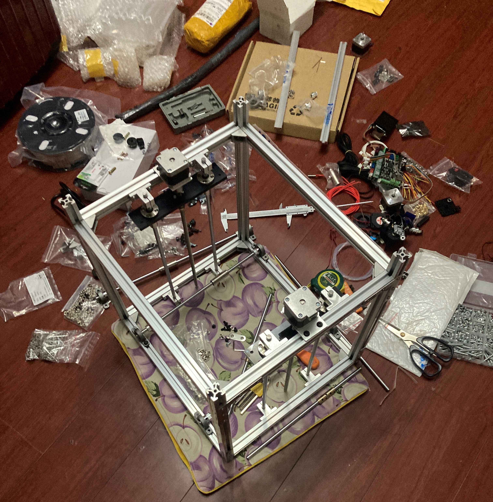
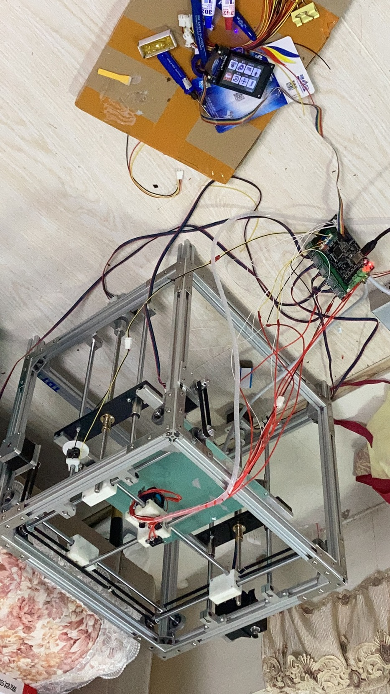

The summer of 2022 was my summer break after sophomore year. I didn't have much money then, but I had endless time and energy, so I decided to assemble a 3D printer myself, which was also when open-source 3D printers were in vogue. On Bilibili I found a fully open-source design published by the creator "大鱼DIY" (Dayu DIY), 《真的有18厘米!!!DIY一台打印的时候也可以移动的UM结构3D打印机!》 (roughly: "It really is 18 centimeters!!! DIY a UM-structure 3D printer that can move even while printing!"). It uses the UM structure (UM stands for Ultimaker structure, often also called the cross-slider / cross-axis structure), and the bill of materials, firmware, 3D models and drawings of the printed parts are all open source. I bought all the parts following this design, which came to a little over 1,000 yuan in total, and assembled it myself. I thought at most a week would be enough to get the printer running, but the whole project dragged on for nearly two months.

Hardware Structure and Control System
The frame of the machine is built from 2020 European-standard aluminum extrusions. The extrusions for the X/Y/Z directions are each cut to length and fixed into a three-dimensional frame with corner brackets and L-shaped connectors (print volume 220×220×220mm). Inside the frame are additional 8mm chrome-plated smooth rods, each supported at both ends by a pillow-block bearing mounted on the extrusions (the Z-axis rods are instead fixed with SK8 rod supports). They guide the moving parts in the X, Y and Z directions, and linear bearings (LM8LUU/LMF8LUU) slide on the rods.
Motion in the XY directions is driven by stepper motors through timing pulleys and GT2 timing belts. The Z axis uses two T8 lead screws with anti-backlash nuts (used to cancel the screw's own backlash), and it is a dual-Z design: each of the two screws is driven by its own motor, with two Z-axis limit switches, so lifting is more stable and avoids the tilting that a single screw tends to suffer from. The extruder is a Titan Extruder, and the stepper motors are driven by A4988 driver modules (which can be swapped for the more expensive but quieter TMC2208).
The control board is an SGen L (compatible with GEN L, MEGA2560 and similar boards), paired with a TFT24 touchscreen for human-machine interaction, and the firmware is Marlin 2.0, the most mainstream open-source 3D printer firmware. Several parameters have to be configured by hand in the firmware source: the actual dimensions of the machine (220×220×220), in which direction's positive or negative limit each limit switch is installed, whether there are dual Z axes, and the actual displacement per motor step.
Bumps During Assembly
The design itself was ready-made, but I stepped into quite a few pits when actually building it.
The most basic problem is that it is very hard to make the frame perfectly square. If the extrusion frame is slightly crooked, the smooth rods stop being parallel, and motion in the XY plane suffers: the motors meet uneven resistance, and at certain positions in the XY plane you can feel the resistance rise noticeably. The tension of the timing belts is also hard to get right: too loose, and movement responds sluggishly with backlash errors; too tight, and it increases the motor load and bearing wear (the distance from the motor to the pulley is short with no tension spring to buffer it, so the problem is more pronounced). On the feeding side, if the extruder clamps too tight it dents the filament, and if too loose it slips, so neither extreme works. Bed leveling is also primitive, done by hand-turning the nuts at the four corners of the heated bed, and each leveling takes a lot of patience.
Midway I also burned out a motor driver once (I never figured out the exact cause; it could be aging, heat dissipation, dust or a quality control issue), and replacing it with a new driver solved it. The touchscreen also once stopped responding completely, and it recovered after I updated the screen's own driver firmware from the manufacturer's website.
The most infuriating part was that everything was connected, yet the motors did not turn at all. I first suspected the control board, so I swapped in a differently modeled board and touchscreen and reflashed the firmware, but the problem remained. The wiring looked correct and the power supply was normal. In the end I used a multimeter to measure the stepper motor's signal wires one by one to find the culprit: the pin order of the stepper motor differed from the pin order of the board's connector. The board had been sending normal signals all along, but because of the different pin order the stepper motor wouldn't work. My solution was also rather crude: I cut off a section of the motor's lead wires and re-soldered them according to the correct pairing I had measured, and only then was the problem solved. This troubleshooting took far longer than assembling the mechanical structure itself.


Print Results and Takeaways
I still cannot forget the joy I felt the first time this printer moved in an orderly way. The distinctive-frequency vibrating sound the stepper motors made when working was as pleasing as a symphony.
Even after it was assembled, printing wasn't smooth sailing. I ran into bubbles, unstable extrusion that produced a blob of "noodles", and printed parts that were not strong enough, and only after slowly adjusting temperature, flow and print speed did things gradually stabilize. The highest print speed I tried was 140mm/s.
Looking back at this project, the mechanical structure of a 3D printer isn't complicated and neither is the control logic, yet getting such a "not hard" engineering problem to truly work well takes far more effort than you would imagine. "Where there's a will, there's a way" is perhaps the saying that fits here. The principle is simple, but the countless details encountered in carrying it out are torturous. Another takeaway is a habit for troubleshooting: whether it's code or hardware, when a problem appears, first roughly estimate which area it might be in, split the system into several modules and check each one, narrowing the range step by step like setting breakpoints when debugging code, instead of searching aimlessly from start to finish. The same goes for checking circuits: go area by area and measure with a multimeter whether each interface responds normally, taking it slowly. As long as the method and tools are right, the problem will sooner or later be pinned down.